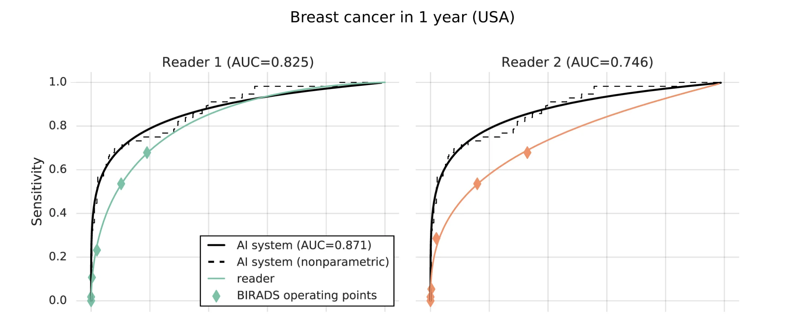

Diagnostic du cancer du sein
Étude : McKinney, S.M., Sieniek, M., Godbole, V. et al. International evaluation of an AI system for breast cancer screening. Nature 577, 89–94 (2020).
Cette étude met en avant un algorithm d'intelligence artificielle qui est plus performant que les radiologues pour détetecter le cancer du sein sur des mammographies. Les ordinateurs pourraient donc, d'ors et déjà remplacer le "deuxième lecteur" de ces examen et ainsi faire gagner du temps aux radiologues. Ces derniers peuvent manquer de détecter jusqu'à 20% des cancers sur des mammographies, et la moitié de l'intégralité des femmes qui se font depister (tous les 1 ou 2 ans) font, sur une période de 10 ans, au moins une fois face à un résultat "Faux Positif" (c'est-à-dire un test annoncé comme une détection positive mais qui s'avère finalement être négatif). Les résultats de cette étude sont très positfs et encourageants. Les tests ont été effectués sur 3,097 patientes américaines et 25,856 patientes venant du Royaume-Uni. L'étude compare les résultats fournis par l'intelligence artificielle à ceux obtenus par 6 radiologues. L'algorithme a un effet positif sur les Faux-positifs mais aussi sur les Faux-négatifs (test annoncé comme négatif sur une patiente qui s'avère être malade).
Quelques chiffres (performance de l'algorithme comparée à celle d'un radiologue)
- Patientes

- Faux-positifs : -5,7%
- Faux-négatifs : -9,4%
- Patientes

- Faux-positifs : -1,2%
- Faux-négatifs : -2,7%
- La courbe AUC-ROC est aussi très encourageante
- 
- L'aire sous la courbe AUC-ROC est meilleure de 11,3% pour l'IA.
- Lorsque l'algorithme intervient dans une procédure avec double lecture (comme c'est le cas au Royaume-Uni)
- L'algorithme réduit de 88% la charge de travail du second lecteur
Cependant, ces résultats sont à nuancer
- Manque de diversité dans les données de test
- Les patientes américaines étudiées étaient pour la plupart déjà diagnostiquées malades
- La plupart des images ont été réalisées avec les mêmes techniques d'imagerie
- Manque de cohérence avec la réalité dans les données de test
- 50% des images de tests s'avéraientt être positives au test ce qui ne représente pas la réalité (&alt 1% des analyse s'avère être prositive)
Finalement, ce résultat est très prometteur pour la suite sans pouvoir être mis en place dès maintenant dans les hopitaux. "The evidence does not yet justify the use of AI to read a mammogram in the Routine breast screening; while the accuracy of AI reported by Kim in all experienced readers exceeded (which is very promising).[...] The advances in artificial intelligence and machine learning are exciting and have the potential to improve patient care, however, all of these tests must undergo significant validation before clinical implementation." - Reuters Health (Un service américain d'actualité sur la santé). Cette technologie est tout de même à suivre puisqu'elle améliore le parcours du patient (en réduisant le nombre de dépistages incorrects) tout en améliorant le quotidien des médecins (temps gagné notamment à la seconde lecture).